цеп
2h_flail_wood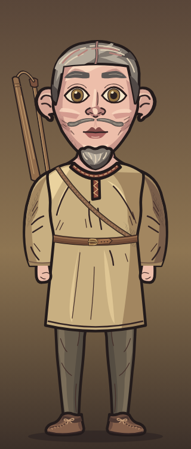
32 × 32
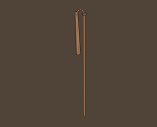
Париж, Франция, около 1270; изображён сельскохозяйственный цеп, тогда как игровой вариант отнесён к двуручному боевому оружию. Ограничение источника: Париж, около 1270 года: показан сельскохозяйственный цеп; боевое применение источником не подтверждено.
Северный деревянный лук
bow:northern_wood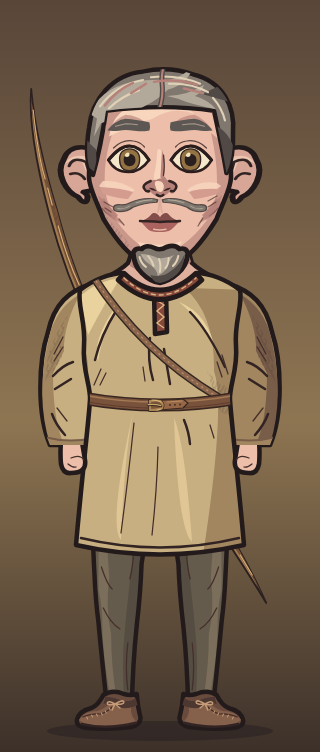
32 × 32
Великий Новгород, X–XV века; это короткий можжевеловый детский лук длиной около 60–75 см, а не подтверждённая взрослая северная модель.
Новгородский составной лук
bow:novgorod_composite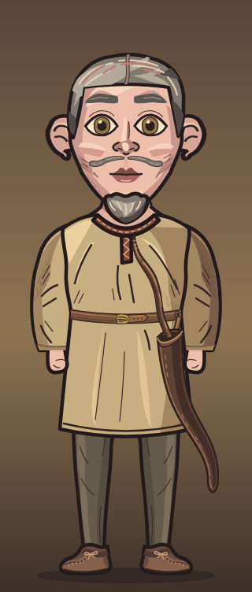
32 × 32
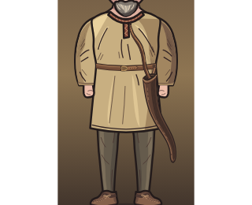
Экспонат подписан как реконструкция XI–XII веков; точная форма для 1200–1250 годов отдельно не выделена.
метла
broom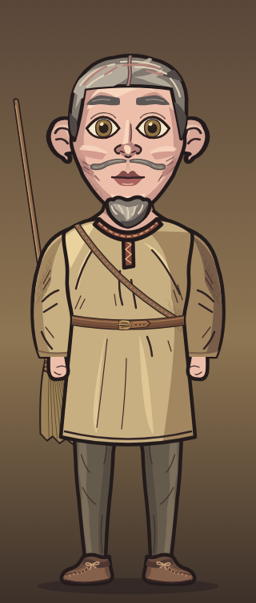
32 × 32
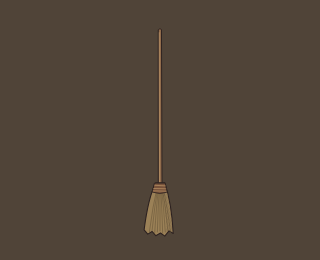
Гент, Фландрия, около 1320–1330 годов; метла показана в хозяйственном деле, а игровой предмет используется как оружие. Ограничение источника: Миниатюра 1320–1330 годов показывает хозяйственную метлу; боевое применение источником не подтверждено.
дубина
club_wooden 32 × 32
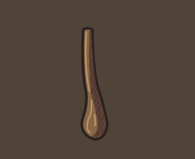
Англия и Нормандия, около 1070-х годов; это клуб епископа-всадника, а игровой предмет описан как грубо выструганная из доски дубина длиной 65 см.
Дубинка
cudgel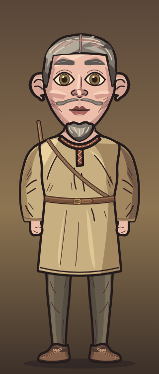
32 × 32
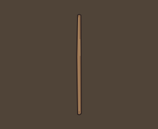
Франция, 1348 год; миниатюра показывает клуб с утолщением у конца, тогда как игровой cudgel — лёгкий деревянный учебный прут длиной около 60 см. Ограничение источника: Единственный аналог — миниатюра 1348 года; она не подтверждает игровой учебный прут для Новгорода 1230 года.
Ляоская булава гудо
weapon:eur_east_liao_guduo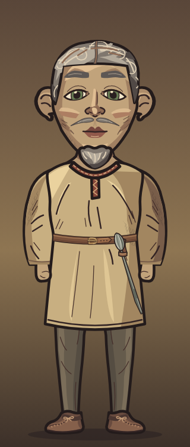
 32 × 32
32 × 32
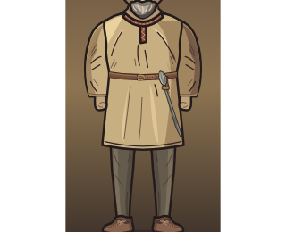
Ляоское погребение в деревне Шуйцюань, Внутренняя Монголия, до 1125 года; это нефритовый церемониальный предмет с деревянной рукоятью, а игровой вариант указан как железная булава 1200–1250 годов.
Роговой кистень из Нефедьева
weapon:eur_steppe_nefedyevo_flail 32 × 32
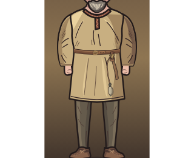
Нефедьево, вторая половина XII века; это конкретная более ранняя находка, сохранившаяся как роговая гиря и части рукояти, а не полный предмет 1200–1250 годов.
Четырёхшипная булава
weapon:eur_steppe_zagorye_mace 32 × 32
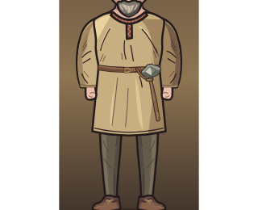
X(?)–XI век, Археологический музей Кракова, исходное место находки неизвестно; форму связывают с Загорьем, но изображён бронзовый предмет, а игровой материал указан как дерево.
Кубовидная булава
weapon:eur_steppe_zaryadye_mace 32 × 32
Киев и Райки, XII–XIV века; показан тот же тип железного навершия, но только головки с другого памятника, не полная булава из Зарайска или Зарядья.
Деревянная палица
weapon:eur_west_bayeux_club 32 × 32
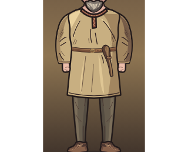
Англия, сцена битвы при Гастингсе 1066 года; показана булавоподобная палица Одо, а не обычная гладкая деревянная дубинка.
Широколезвийная секира
weapon:eur_west_broad_axe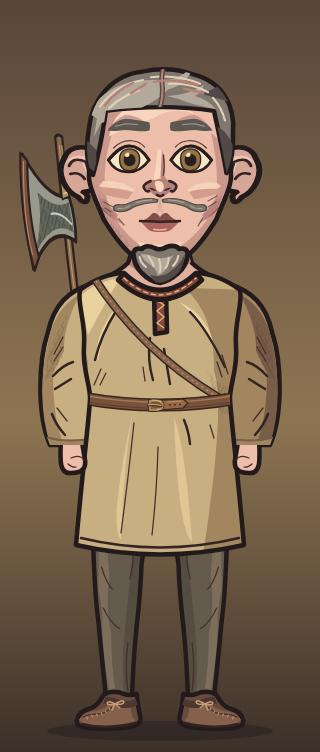
32 × 32
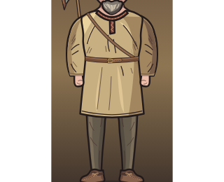
Норвегия, первая половина XI века; находка старше игрового периода, на сохранившемся топорище видна латунная обойма.
Скандинавский трёхдольный меч
weapon:eur_west_lobed_sword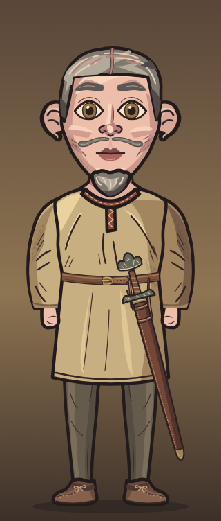
32 × 32
Скандинавская область, X–XI века; экземпляр старше игрового периода, фото показывает только рукоять и верхнюю часть клинка.
Меч в ножнах
weapon:sheathed_sword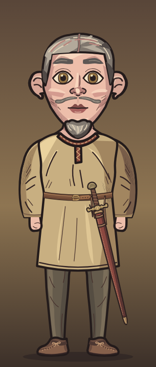
32 × 32
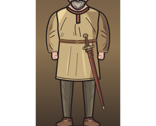
Франция, 1244–1254 годы; миниатюра показывает западноевропейских воинов и поясной подвес ножен, а не новгородский предметный комплекс.
наконечник стрелы двушипный (гарпунный)
wp_ah_barbed
32 × 32
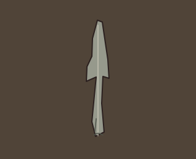
Лондон, XIII–XIV века; западноевропейская втульчатая головка с обломанными зазубринами не подтверждает русский черешковый гарпунный вариант.
тупой наконечник стрелы (томар) костяной или деревянный
wp_ah_blunt 32 × 32
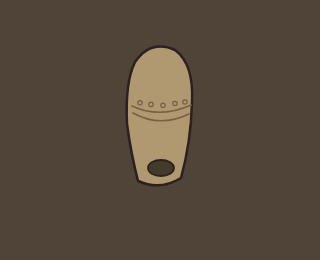
XV – начало XVI века, Городок под Нижним Новгородом; предмет позднее целевого периода, хотя томары в Новгороде известны с X до начала XVI века.
костяной наконечник стрелы
wp_ah_bone 32 × 32
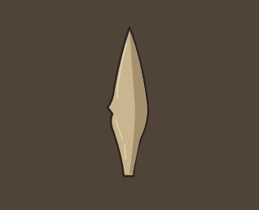
Китай; датировка в доступной карточке не указана, изображено костяное острие с небольшим выступом, а не предмет новгородского происхождения.
наконечник стрелы широколезвийный охотничий, срезень
wp_ah_broad_hunting 32 × 32

XIII–XIV века, селище Яковлевское-3 в Ярославской области; на фото узкий вытянутый срезень, а не широкий профиль из названия вещи.
наконечник стрелы листовидный
wp_ah_leaf 32 × 32
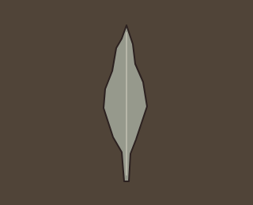
XV век, городище Городок в Нижнем Новгороде; снимок показывает набор разных форм и относится к более позднему времени.
наконечник стрелы черешковый ромбический
wp_ah_rhomboid 32 × 32

X–XII века, Рюриково городище; находка старше игрового периода, но форма черешкового ромбовидного пера совпадает.
наконечник стрелы втульчатый бронебойный
wp_ah_socketed_ap 32 × 32
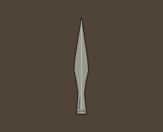
Новгород, XIII в.; музейный предмет втульчатый, но бронебойность и гранёная форма источником не установлены.
наконечник стрелы черешковый узкий бронебойный (гранёный)
wp_ah_tanged_ap 32 × 32
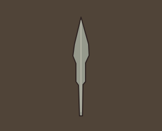
Рюриково городище, X–XII вв.; находка ранняя, а точное соответствие узкому гранёному типу 1230 года не установлено.
стрела
wp_arrow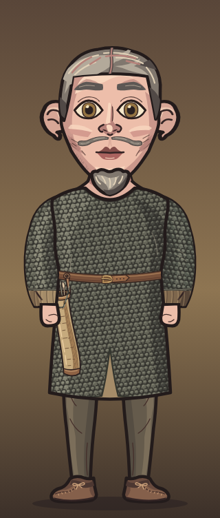
32 × 32
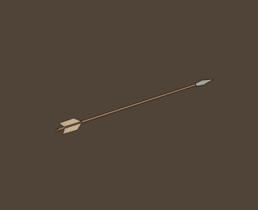
Новгород, XII в. — первая треть XIII в.; сохранилась деревянная часть, а перья и железный или костяной наконечник в карточке не указаны.
боевой топор
wp_battle_axe 32 × 32
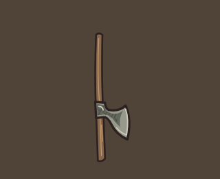
лук сложный (составной)
wp_bow_composite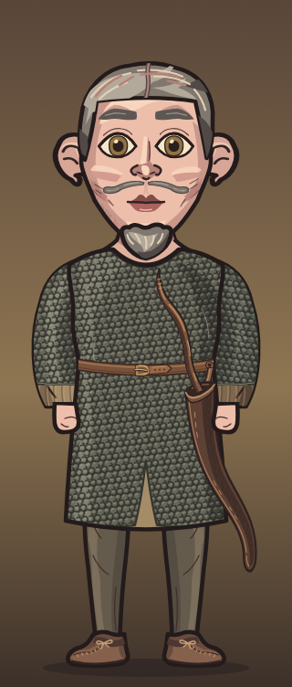
32 × 32
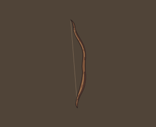
Современная музейная реконструкция по археологическим материалам и письменным источникам; точные породы дерева и материал тетивы здесь не указаны.
лук простой деревянный
wp_bow_self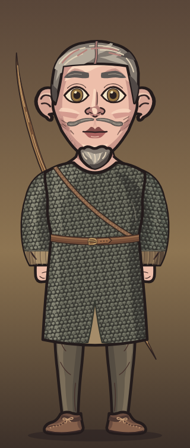
32 × 32
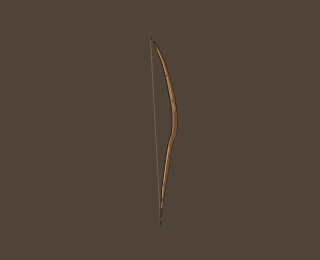
Троицкий раскоп, Великий Новгород, вторая половина XII в. – рубеж XIII; предмет короткий, детский, а не подтверждённый боевой образец.
тетива
wp_bowstring 32 × 32
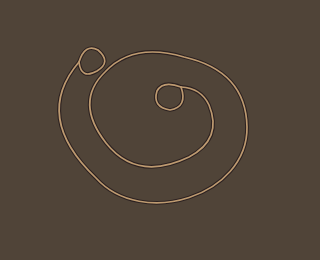
Новгород, современная реконструкция по материалам XII в.; тетива показана на собранном луке, а не как отдельная археологическая находка.
дубина
wp_club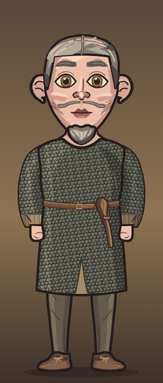
32 × 32
Ограничение источника: В INDEX нет фотографии дубины.
самострел (ранний арбалет)
wp_crossbow 32 × 32
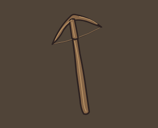
Париж, 1225–1250; французская библейская миниатюра показывает западноевропейский самострел, а не установленную новгородскую модель 1230 года.
самострельный болт
wp_crossbow_bolt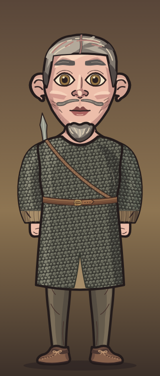
32 × 32
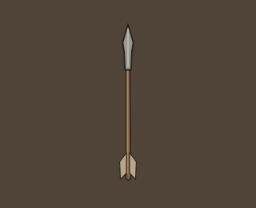
Новгородская археологическая коллекция, XIII–XV вв.; сохранился железный наконечник, а не болт с коротким древком.
кистень
wp_flail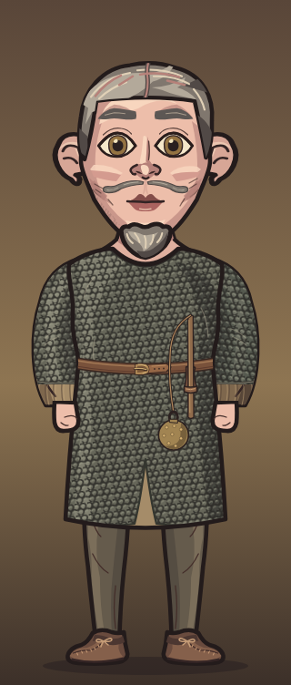
32 × 32
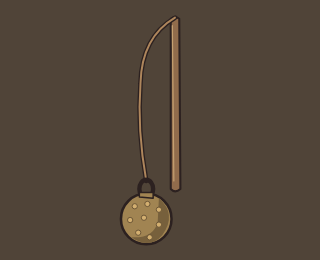
нож (боевой и хозяйственный)
wp_knife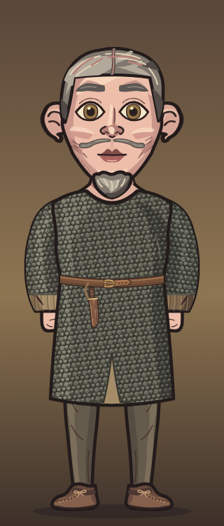
32 × 32
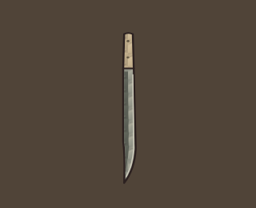
До и после
конное копьё
wp_lance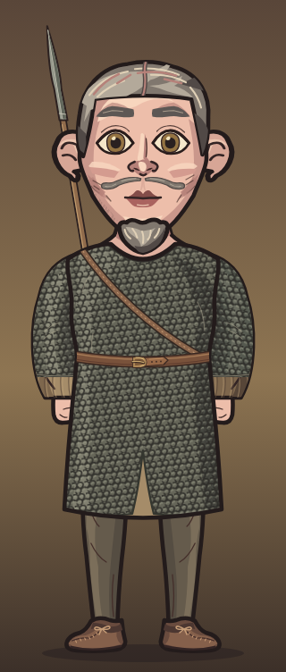
32 × 32
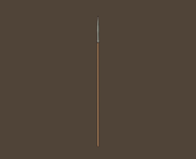
Париж, Франция, 1244–1254 гг.; западноевропейская миниатюра показывает конный бой, но не русское копьё и не точный профиль наконечника
длинный однолезвийный нож
wp_long_knife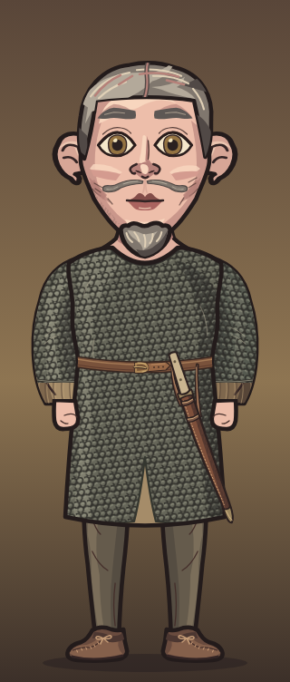
32 × 32
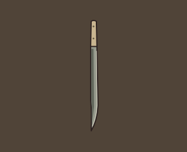
Новгород, XIII век; музейный нож длиной 16 см с костяной рукоятью не подтверждает игровую удлинённую разновидность Ограничение источника: Показан обычный нож длиной 16 см; он не подтверждает удлинённую игровую разновидность.
булава
wp_mace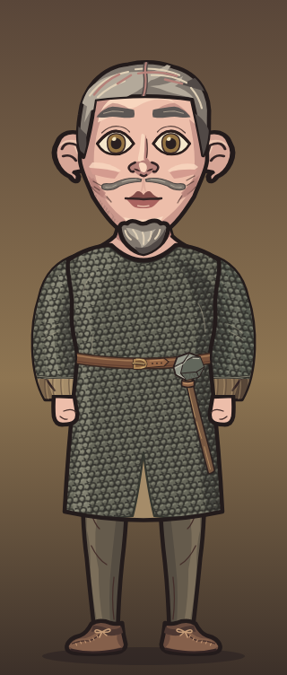
32 × 32
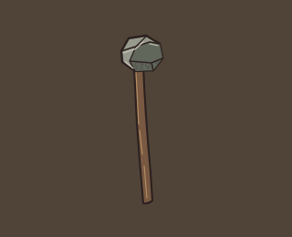
рогатина (охотничье и боевое копьё)
wp_rogatina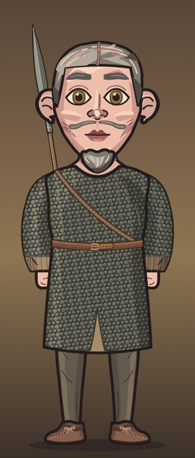
32 × 32
сабля
wp_sabre 32 × 32
Куликово поле, XIII–XIV вв.; находка может быть позднее новгородского 1230 г. и имеет лишь слабый изгиб клинка
щит миндалевидный (каплевидный)
wp_shield_almond 32 × 32
Париж, Франция, 1244–1254 гг.; показаны западные рыцарские щиты с гербовыми рисунками, а не новгородский щит
обтяжка и окраска щита
wp_shield_facing 32 × 32
Елец, XII–XIV вв.; музей показывает копию монгольского круглого щита с металлическими накладками, а не древнерусскую миндалевидную обтяжку и окраску
части щита: дощатая основа, окантовка, рукоять и плечевой ремень
wp_shield_parts 32 × 32
Париж, Франция, 1244–1254 гг.; миниатюра показывает плечевой ремень, но не раскрывает деревянную основу, внутреннюю рукоять и окантовку
щит круглый
wp_shield_round 32 × 32
щит треугольный (ранний, со скруглённым верхом)
wp_shield_triangular 32 × 32
Марбург, Германия, ок. 1230–1240; рельефный лев и заострённый контур отличаются от раннего новгородского варианта.
умбон щита
wp_shield_umbo 32 × 32
Русь, X век; курганные умбоны на несколько веков старше целевого периода.
каменное ядро метательной машины
wp_siege_stone 32 × 32

Монфор, Иерусалимское королевство, ок. 1250; каменный снаряд осадной машины из другого региона.
сигнальный рог
wp_signal_horn 32 × 32
Южная Италия, ок. 1200; резной слоновый бивень с металлическими креплениями вместо простого рога животного. Ограничение источника: Источник показывает олифант из Южной Италии около 1200 года, а не простой рог животного.
праща
wp_sling 32 × 32
Франция, ок. 1244–1254; библейская миниатюра показывает пращу в западноевропейской сцене.
копьё пешее
wp_spear
32 × 32
Новгородская икона, ок. 1130; религиозное изображение, а не археологическая находка оружия.
подток копья
wp_spear_butt 32 × 32

Кембриджшир, Англия, средневековая дата не уточнена; конкретная форма не привязана к Новгороду.
копейное древко
wp_spear_shaft 32 × 32
Новгородская икона, ок. 1130; древко показано частью копья, а не отдельной вещью.
посох, палка
wp_staff 32 × 32
Франция, ок. 1244–1254; показан пастуший посох, а не русское боевое оружие.
сулица (метательное копьё)
wp_sulitsa 32 × 32
меч
wp_sword 32 × 32
части рукояти меча (перекрестье, навершие, основа рукояти)
wp_sword_hilt_parts 32 × 32
Меч с заострённо-овальным навершием
weapon:eur_west_oval_sword 32 × 32
Западная Европа, XII–начало XIII века; у меча округлое навершие, а не заострённо-овальное.
кожаная защита предплечья лучника
wp_archer_bracer 32 × 32
Йорк, Англия, конец XIV века; предмет позднее и из другого региона, его форма не подтверждена для Руси около 1230 года. Ограничение источника: Аналог происходит из Йорка и датирован концом XIV века; форма для Руси 1230 года не подтверждена.
Скальвское листовидное копьё
weapon:eur_west_scalvian_spear 32 × 32
Круглый щит из Гокстада
shield:gokstad 32 × 32
Миндалевидный щит
shield:kite 32 × 32
Щит с фигурки из Льюиса
shield:lewis 32 × 32
Миндалевидный щит с новгородского блюда
shield:novgorod_dish 32 × 32
Круглый щит с иконы Георгия
shield:novgorod_george 32 × 32
Икона датируется 1130–1140-ми гг. и поновлялась в XIV в.; щит показан как часть священного образа, а не сохранился как отдельная вещь.
Круглый щит
shield:round 32 × 32
Новгород, 1130–1140-е гг.; иконографический щит Руси показывает общую форму, но не региональные варианты остальных культур из списка.
Расписной щит из Щецина
shield:szczecin_painted 32 × 32
Подзамче, Щецин, 1176–1200 гг.; находка относится к концу XII века, немного раньше целевого периода, и часть окраски утрачена.
Треугольный щит
shield:triangular 32 × 32
Марбург, Германия, около 1230–1240 гг.; это погребальный щит с рельефным львом, а не документированный кастильский полевой щит.
Щит со зверем из Юрьева-Польского
shield:yuriev_lion 32 × 32
Юрьев-Польский, собор 1230–1234 гг.; это храмовая каменная эмблема, а не отдельный переносной щит, и часть резьбы переставлена при восстановлении XV века.
Новгородский топор
weapon:axe 32 × 32
Рюриково городище у Новгорода, XII в.; музейная карточка не определяет топор как боевой тип и показывает только железную головку.
Двушипная сулица
weapon:eur_steppe_grigorovo_dart 32 × 32
Рюриково городище, IX–XI вв.; это втульчатый наконечник стрелы с двумя шипами, а не длинное метательное копьё, и он старше периода 1200–1250.
Топор-чекан из Сельца
weapon:eur_steppe_seltso_hammer_axe 32 × 32
Музей-заповедник «Куликово поле», широкая датировка X–XIV вв.; похожий топорик-чекан, а не конкретная находка могильника Сельцо 8 X–XI вв.
Венская сабля венгерского типа
weapon:eur_steppe_vienna_sabre 32 × 32
Вена, первая половина X в.; ранняя венгерская сабля из музейной сокровищницы примерно на три столетия старше оружия 1230 года.
Ярославская сабля
weapon:eur_steppe_yaroslavl_sabre 32 × 32
Ярославль, 1238 г.; сохранился сломанный и погнутый клинок без рукояти, а принадлежность монгольскому воину исследователи считают вероятной, но не доказанной.
Ранний арбалет с камня Дростена
weapon:eur_west_drosten_crossbow 32 × 32
IX век, Сент-Вигеанс, Шотландия; это охотничья резьба, а распознавание оружия как арбалета является научной интерпретацией, не изображением оружия 1200–1250 годов.
Франциска
weapon:eur_west_francisca 32 × 32
Сомерсет, датировка 250–600 годов; исследователи считают форму вероятной франциской, но допускают позднеримский топор, на много веков раньше 1200–1250 годов.
Англосаксонский сакс
weapon:eur_west_seax 32 × 32
Темза, Лондон, конец VIII–IX века; это ранний сакс с рунами, он подтверждает форму, но не бытование такого оружия в 1200–1250 годах.
Крылатое копьё
weapon:eur_west_winged_spear 32 × 32
Река Нене у Стиббингтона, Англия, период викингов; предмет существенно раньше 1200–1250 годов и представляет собой наконечник, а не копьё целиком.
Новгородское копьё
weapon:spear 32 × 32
Великий Новгород, конец XIII–начало XIV века; опубликован только отдельный кованый наконечник, датированный немного позже целевого периода, а не копьё с древком.
Новгородский меч
weapon:sword 32 × 32
Псков, во второй половине XIII века по музейной атрибуции; связь меча с Довмонтом и его датировка оспариваются, это не находка из Новгорода.